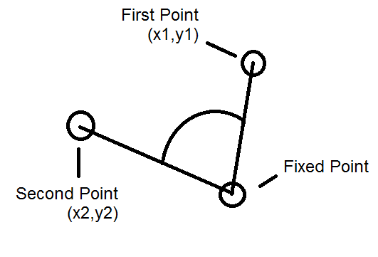

O elemento geométrico mais simples é o ponto.
A nossa classe começa desta forma:
import java.util.*; import static java.lang.Math.*; class Point { public static final double EPSILON = 1e-7; public double x,y; public Point(double x, double y) { this.x=x; this.y=y; } public String toString() { return "(" + x + "," + y + ")"; }
Vamos sempre usar doubles. Os floats devem evitar-se por haver muitos problemas de precisão. Eventualmente poderão ser precisos se houver necessidade de poupar memória, mas isso deve ocorrer muito raramente.
A constante EPSILON irá servir para comparar doubles, já que se deve evitar usar o == para o efeito. O seu valor poderá ter de ser menor, consoante o contexto do vosso problema.
Quando se importa uma classe de forma static, como fizemos para o Math, podemos usar os seus métodos diretamente. Eg, sqrt() em vez de Math.sqrt().
Alguns métodos úteis:
class Point { ... public static double hypot(double x, double y) { return sqrt(x*x+y*y); } public static boolean eq(double a, double b) { return abs(a-b) < EPSILON; } public static double deg2rad(double degree) { return degree * PI/180.0; } public static double rad2deg(double rad) { return rad * 180.0/PI; } public boolean equals(Point p) { return eq(x,p.x) && eq(y,p.y); } public double distance(Point p) { return hypot(x-p.x,y-p.y); }
O método hypot() devolve a distância à origem, o eq() compara dois doubles para ver se são iguais. O resto é auto-explicativo.
O próximo método devolve um novo ponto que corresponde à rotação do ponto um número de graus em relação à origem. Internamente ele converte para radianos, antes de fazer o cálculo trigonométrico:
public Point rotate(double rad) { // rotate wrt origin (in radians) return new Point(x*cos(rad)-y*sin(rad), x*sin(rad)+y*cos(rad)); }
Essencialmente está-se a multiplicar o vector [x y]T pela matrix de rotação. Detalhes aqui.
Os próximos métodos precisam da noção de vector. Assim, antes de continuar, vamos criar uma outra classe Vector com os métodos típicos de operações de e com vectores:
class Vector { public double x,y; public Vector(double x, double y) { this.x = x; this.y = y; } public Vector(Point a, Point b) { this.x = b.x - a.x; this.y = b.y - a.y; } public Vector scale(double s) { return new Vector(x*s,y*s); } public Point translate(Point p) { return new Point(x+p.x,y+p.y); } public double dot(Vector v) { return x*v.x + y*v.y; } // dot product public double norm_sq() { return x*x + y*y; } // square of vector's norm public double cross(Vector v) { return x*v.y - y*v.x; } // cross product }
Voltemos à classe Point:
O próximo método verifica se três pontos são colineares:
public static boolean collinear(Point p, Point q, Point r) { return Math.abs(new Vector(p,q).cross(new Vector(p, r))) < EPSILON; }
ou seja, três pontos A, B, C são colineares se o produto externo dos vectores dados por AB e AC é zero. Isto verifica-se já que o produto externo devolve o vector prependicular aos dois originais, com a dimensão dada pela área do paralelogramo definido por esses dois vectores. Se eles estiverem na mesma linha, essa área é zero!
O seguinte usa igualmente o produto externo para verificar se os três pontos fazem uma curva para a esquerda (counter-clockwise) ou não. O sinal do produto externo dá-nos essa informação. Informalmente, usamos a regra da mão direita:

// counterclockwise: if a -> b -> c makes a left turn // if == 0 they are colinear, if negative they make a right turn (clockwise) public static boolean ccw(Point a, Point b, Point c) { Vector ab = new Vector(a,b), ac = new Vector(a,c); return ab.cross(ac) > 0; }
O seguinte método devolve o ângulo de dois segmentos definido por três pontos:

// angle between the three points, o is the middle point public static double angle(Point a, Point o, Point b) { Vector oa = new Vector(o,a), ob = new Vector(o,b); return acos(oa.dot(ob) / sqrt(oa.norm_sq()*ob.norm_sq())); }
O código expressa a equação
$$ \theta = \arccos \left( \frac{\vec{AB}\cdot \vec{BC}}{ \|\vec{AB}\| \, \|\vec{BC}\|}\right) $$Há poucos problemas que se conseguem resolver apenas com pontos, mas um deles é o UVa 587. Leiam o enunciado e tentem fazê-lo!
O resto deste guião foca um problema mais complexo.
Dado n pontos, qual o par de pontos que se encontra mais perto? Este problema tem uma solução trivial em O(n2), basta calcular as distâncias de todos os pares e devolver o mínimo.
Mas é possível fazer em O(n.log n). O algoritmo usa uma técnica de divide and conquer e está explicado aqui https://en.wikipedia.org/wiki/Closest_pair_of_points_problem
O código correspondente em Java (adaptado daqui):
static double bestDistance; static Point best1, best2; public static Point[] closestPoints(Point[] ps) { int n = ps.length; if (n <= 1) return null; Point[] pointsByX = new Point[n]; for (int i=0; i<n; i++) pointsByX[i] = ps[i]; Arrays.sort(pointsByX, (Point p1, Point p2) -> { if (p1.x > p2.x) return (int)1; // sort by x-coordinate (breaking ties by y-coordinate) if (p1.x < p2.x) return (int)-1; return (int)round(p1.y-p2.y); }); // check for coincident points (bestDistance == 0) for(int i=0; i<n-1; i++) if (pointsByX[i].equals(pointsByX[i+1])) return new Point[] {pointsByX[i], pointsByX[i+1]}; Point[] pointsByY = new Point[n]; // sort by y-coordinate (but not yet sorted) for(int i=0; i<n; i++) pointsByY[i] = pointsByX[i]; bestDistance = Double.POSITIVE_INFINITY; Point[] aux = new Point[n]; closest(pointsByX, pointsByY, aux, 0, n-1); return new Point[] {best1, best2}; } // find closest pair of points in pointsByX[lo..hi] // precondition: pointsByX[lo..hi] and pointsByY[lo..hi] are the same sequence of points // precondition: pointsByX[lo..hi] sorted by x-coordinate // postcondition: pointsByY[lo..hi] sorted by y-coordinate private static double closest(Point[] pointsByX, Point[] pointsByY, Point[] aux, int lo, int hi) { if (hi <= lo) return Double.POSITIVE_INFINITY; int mid = lo + (hi - lo) / 2; Point median = pointsByX[mid]; // compute closest pair with both endpoints in left subarray or both in right subarray double delta1 = closest(pointsByX, pointsByY, aux, lo, mid); double delta2 = closest(pointsByX, pointsByY, aux, mid+1, hi); double delta = min(delta1, delta2); // merge back so that pointsByY[lo..hi] are sorted by y-coordinate merge(pointsByY, aux, lo, mid, hi); // aux[0..m-1] = sequence of points closer than delta, sorted by y-coordinate int m = 0; for (int i = lo; i <= hi; i++) if (abs(pointsByY[i].x - median.x) < delta) aux[m++] = pointsByY[i]; // compare each point to its neighbors with y-coordinate closer than delta for (int i = 0; i < m; i++) { // a geometric packing argument shows that this loop iterates at most 7 times for (int j = i+1; (j < m) && (aux[j].y - aux[i].y < delta); j++) { double distance = aux[i].distance(aux[j]); if (distance < delta) { delta = distance; if (distance < bestDistance) { bestDistance = delta; best1 = aux[i]; best2 = aux[j]; } } } } return delta; } // stably merge a[lo .. mid] with a[mid+1 ..hi] using aux[lo .. hi] // precondition: a[lo .. mid] and a[mid+1 .. hi] are sorted subarrays private static void merge(Point[] a, Point[] aux, int lo, int mid, int hi) { for (int k = lo; k <= hi; k++) aux[k] = a[k]; // merge back to a[] int i = lo, j = mid+1; for (int k = lo; k <= hi; k++) { if (i > mid) a[k] = aux[j++]; else if (j > hi) a[k] = aux[i++]; else if (compareTo(aux[j],aux[i])<0) a[k] = aux[j++]; else a[k] = aux[i++]; } } private static int compareTo(Point p1, Point p2) { if (p1.y < p2.y) return -1; if (p1.y > p2.y) return +1; if (p1.x < p2.x) return -1; if (p1.x > p2.x) return +1; return 0; }